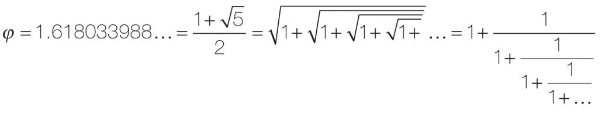
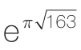

记忆对数学的作用很容易理解。我们每个人都无意识地储存了大量的数字。例如，1 492、800、911或2 000等数字在唤醒记忆方面具有强大的力量。更大存储量的数字记忆无疑是计算天才的主要优势之一。他们对数字如此熟悉，以至于对于他们而言几乎没有数字是随机的。一串在我们看来很普通的数字，对他们来说却具有独特的含义。正如速算者比德（Bidder）所说4：
763由“7-6-3”三个图形构成；但763对我来说仅仅是一个数量、一个数字、一个概念，就像“海马”这个词代表一种动物一样。
每位计算天才的心里都有一个“动物园”，充斥着各种由熟悉的数字组成的“寓言集”。熟悉数字、了解它们的内在，这些都是算术专家的特征。“数字对我来说如同朋友，”维姆·克莱因（Wim Klein）说，“对你来说并非如此吧。比如3 844，在你看来只是一个3、一个8、一个4和又一个4，但是我看到的却是62的平方！”
大量的传记轶事证实，伟大的数学家非常熟练地运用着他们的职业工具：数字或几何图形。下面是哈代和拉马努扬之间的对话，当时拉马努扬患上了严重的肺结核，居住在疗养院中5。“我来这里时乘坐的出租车上标有数字1 729，”哈代说，“这似乎是一个相当无聊的数字。”“哦，不，哈代，”拉马努扬反驳道，“这是一个有魅力的数字。它是能够以两种形式表示为两个数字的立方和的最小数字：1729=13+123=103+93！”
高斯是另一位优秀的数学家，也是一个计算奇才，他在很小的时候就表现出了数学天赋。他的老师让全班学生从1加到100，也许是希望学生们能够安静半个小时，但小高斯很快就得出了计算结果。小高斯迅速觉察到问题中的对称性。他在心中对数轴进行折叠，将数字分组：100和1，99和2，98和3，以此类推。如此一来，原来的加法运算就成了将50组数字相加，每组数字的和都是101，因此总和是5 050。
法国数学家弗朗索瓦·勒利奥内（Francois Le Lionnais）强调“心算和计算的天赋……在某一特定的方面具有共同的敏感性，我称之为每个数字的特性”。1983年，勒利奥内出版了《非凡数字》（Remarkable Numbers）。在这本书里，他列举了几百个具有特定数学属性的数字6。他在5岁的时候开始对数字着迷。在学习了印在笔记本后面的乘法表之后，他惊奇地发现9的倍数的最后一位数字是9、8、7、6等，如9、18、27、36等。你能说出这是为什么吗？作为一个男孩、一名学生，直至最后成为一名专业数学家，他用他的一生来寻找真正的“奇”数和其他深奥数学问题的答案。第二次世界大战期间，在被关进纳粹集中营的时候，他的资料丢失了，但他从头开始，根据记忆整理资料，年复一年，为这份资料增加了更多宝贵的知识。
勒利奥内的非凡数字列表，揭示了一个顶级数学家必须了解的算术中的大量知识。他的“寓言集”对普通人来说永远是隐晦的。例如，244 823 040是少数几个他用3颗星标记的数字，他用标准的数学语言将其描述为：“第M24组的顺序，第九零星组，这是斯坦纳（Steiner）用指数（5、8、24）自同构的一个例子。”这个定义是我们中多数人完全无法理解的。下面是一些在福多尔（Fodor）数轴指南中最容易理解的例子：
·

· 著名的“黄金分割”，据说是设计许多艺术作品的基础，如帕特农神庙。把它输入你的计算器里，然后按“1/x”或“x2”键，结果会让你震惊。
· 4：为了使任何两个邻国的颜色均不相同，任何平面地图都需要的最少颜色数。与加里·卡斯帕罗夫（Garry Kasparov）在国际象棋中输给了IBM的超级计算机“深蓝”一样，“四色定理”在数学界的名气在于它标志着人类推理的极限。在证明它的过程中，需要逐个检验的特例太多，因此只有计算机才能完成。
· 81：能够分解为3个数字的平方和的最小平方数（92=12+42+82）。
·

：一个非常接近整数的实数，它的前12位小数都是9（拉马努扬的另一个贡献）。· 由317个数字1组成的数字是一个质数。
· 1 234 567 891也是一个质数。
· 甚至是39，这样一个没有明显数学属性的最小整数，勒利奥内对它的评价看起来也是一种悖论：因为这一点本身不就使数字39非常特殊了吗？